library(knitr)We will look at:
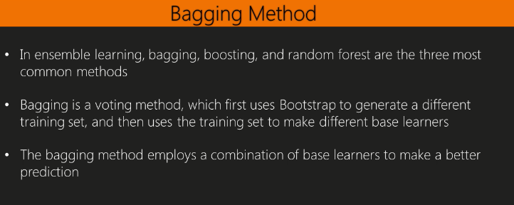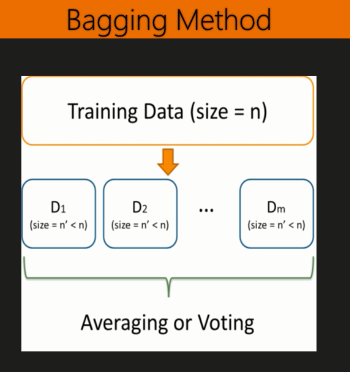
library(C50)## Warning: package 'C50' was built under R version 3.4.3data(churn)
str(churnTrain)## 'data.frame': 3333 obs. of 20 variables:
## $ state : Factor w/ 51 levels "AK","AL","AR",..: 17 36 32 36 37 2 20 25 19 50 ...
## $ account_length : int 128 107 137 84 75 118 121 147 117 141 ...
## $ area_code : Factor w/ 3 levels "area_code_408",..: 2 2 2 1 2 3 3 2 1 2 ...
## $ international_plan : Factor w/ 2 levels "no","yes": 1 1 1 2 2 2 1 2 1 2 ...
## $ voice_mail_plan : Factor w/ 2 levels "no","yes": 2 2 1 1 1 1 2 1 1 2 ...
## $ number_vmail_messages : int 25 26 0 0 0 0 24 0 0 37 ...
## $ total_day_minutes : num 265 162 243 299 167 ...
## $ total_day_calls : int 110 123 114 71 113 98 88 79 97 84 ...
## $ total_day_charge : num 45.1 27.5 41.4 50.9 28.3 ...
## $ total_eve_minutes : num 197.4 195.5 121.2 61.9 148.3 ...
## $ total_eve_calls : int 99 103 110 88 122 101 108 94 80 111 ...
## $ total_eve_charge : num 16.78 16.62 10.3 5.26 12.61 ...
## $ total_night_minutes : num 245 254 163 197 187 ...
## $ total_night_calls : int 91 103 104 89 121 118 118 96 90 97 ...
## $ total_night_charge : num 11.01 11.45 7.32 8.86 8.41 ...
## $ total_intl_minutes : num 10 13.7 12.2 6.6 10.1 6.3 7.5 7.1 8.7 11.2 ...
## $ total_intl_calls : int 3 3 5 7 3 6 7 6 4 5 ...
## $ total_intl_charge : num 2.7 3.7 3.29 1.78 2.73 1.7 2.03 1.92 2.35 3.02 ...
## $ number_customer_service_calls: int 1 1 0 2 3 0 3 0 1 0 ...
## $ churn : Factor w/ 2 levels "yes","no": 2 2 2 2 2 2 2 2 2 2 ...# Remove certain variables that we are not going to use
churnTrain = churnTrain[,! names(churnTrain) %in% c("state"
, "area_code"
, "account_length") ]
set.seed(2)
ind = sample(2, nrow(churnTrain), replace = TRUE, prob=c(0.7,0.3))
trainset = churnTrain[ind == 1,]
testset = churnTrain[ind == 2,]
dim(trainset)## [1] 2315 17dim(testset)## [1] 1018 17split.data = function(data, p = 0.7, s = 666){
set.seed(s)
index = sample(1:dim(data)[1])
train = data[index[1:floor(dim(data)[1] * p)], ]
test = data[index[((ceiling(dim(data)[1] * p)) + 1):dim(data)[1]], ]
return(list(train = train, test = test))
}# install.packages("adabag")
library(adabag)## Warning: package 'adabag' was built under R version 3.4.3## Loading required package: rpart## Loading required package: caret## Loading required package: lattice## Loading required package: ggplot2## Warning: package 'ggplot2' was built under R version 3.4.1## Loading required package: foreach## foreach: simple, scalable parallel programming from Revolution Analytics
## Use Revolution R for scalability, fault tolerance and more.
## http://www.revolutionanalytics.com## Loading required package: doParallel## Warning: package 'doParallel' was built under R version 3.4.3## Loading required package: iterators## Loading required package: parallelset.seed(2)
churn.bagging = adabag::bagging(churn ~ ., data=trainset, mfinal=10)
churn.bagging$importance## international_plan number_customer_service_calls number_vmail_messages total_day_calls total_day_charge total_day_minutes total_eve_calls total_eve_charge
## 10.4948380 16.4260510 0.5319143 0.3774190 0.0000000 28.7545042 0.1463585 0.0000000
## total_eve_minutes total_intl_calls total_intl_charge total_intl_minutes total_night_calls total_night_charge total_night_minutes voice_mail_plan
## 14.2366754 8.7733895 0.0000000 9.7838256 0.4349952 0.0000000 2.3379622 7.7020671churn.predbagging= predict.bagging(churn.bagging,newdata=testset)
churn.predbagging$confusion## Observed Class
## Predicted Class yes no
## no 35 866
## yes 106 11churn.predbagging$error## [1] 0.04518664churn.baggingcv = bagging.cv(churn ~ ., v=10, data=trainset, mfinal=10)
churn.baggingcv$confusion## Observed Class
## Predicted Class yes no
## no 120 1947
## yes 222 26churn.baggingcv$error## [1] 0.06306695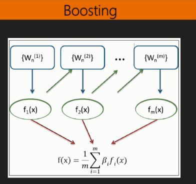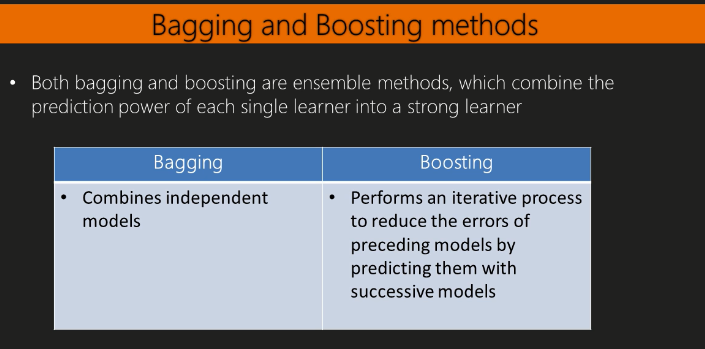
set.seed(2)
churn.boost = boosting(churn ~.,data=trainset,mfinal=10,coeflearn="Freund",
boos=FALSE , control=rpart.control(maxdepth=3))
churn.boost.pred = predict.boosting(churn.boost,newdata=testset)
churn.boost.pred$confusion## Observed Class
## Predicted Class yes no
## no 41 858
## yes 100 19churn.boost.pred$error## [1] 0.0589391library(caret)
# install.packages("mboost")
library(mboost)## Warning: package 'mboost' was built under R version 3.4.3## Loading required package: stabs## Warning: package 'stabs' was built under R version 3.4.3## This is mboost 2.8-1. See 'package?mboost' and 'news(package = "mboost")'
## for a complete list of changes.##
## Attaching package: 'mboost'## The following object is masked from 'package:ggplot2':
##
## %+%# install.packages("pROC")
library(pROC)## Warning: package 'pROC' was built under R version 3.4.3## Type 'citation("pROC")' for a citation.##
## Attaching package: 'pROC'## The following objects are masked from 'package:stats':
##
## cov, smooth, varset.seed(2)
ctrl = trainControl(method = "repeatedcv", repeats = 1,
classProbs = TRUE, summaryFunction = twoClassSummary)
ada.train = train(churn ~ ., data = trainset, method = "ada",
metric = "ROC", trControl = ctrl)## Loading required package: ada## Warning: package 'ada' was built under R version 3.4.3## Loading required package: plyrada.train$result## nu maxdepth iter ROC Sens Spec ROCSD SensSD SpecSD
## 1 0.1 1 50 0.8544056 0.9063866 0.014184997 0.03026171 0.04957303 0.006216451
## 4 0.1 2 50 0.8848011 0.7108403 0.006581039 0.04013608 0.11590104 0.005866431
## 7 0.1 3 50 0.9051436 0.4095798 0.006081116 0.03557342 0.11815895 0.003999819
## 2 0.1 1 100 0.8553078 0.8889076 0.016212890 0.03467343 0.06891872 0.006658101
## 5 0.1 2 100 0.8908190 0.6494958 0.009624160 0.04171451 0.12550486 0.004422596
## 8 0.1 3 100 0.9072497 0.3831092 0.007093780 0.03421817 0.08040967 0.003541178
## 3 0.1 1 150 0.8592966 0.8743697 0.018243347 0.03495324 0.07311649 0.006405739
## 6 0.1 2 150 0.8921171 0.6025210 0.010131775 0.04028120 0.11524560 0.003358529
## 9 0.1 3 150 0.9077623 0.3773950 0.008109009 0.03240733 0.08103661 0.003545259plot(ada.train)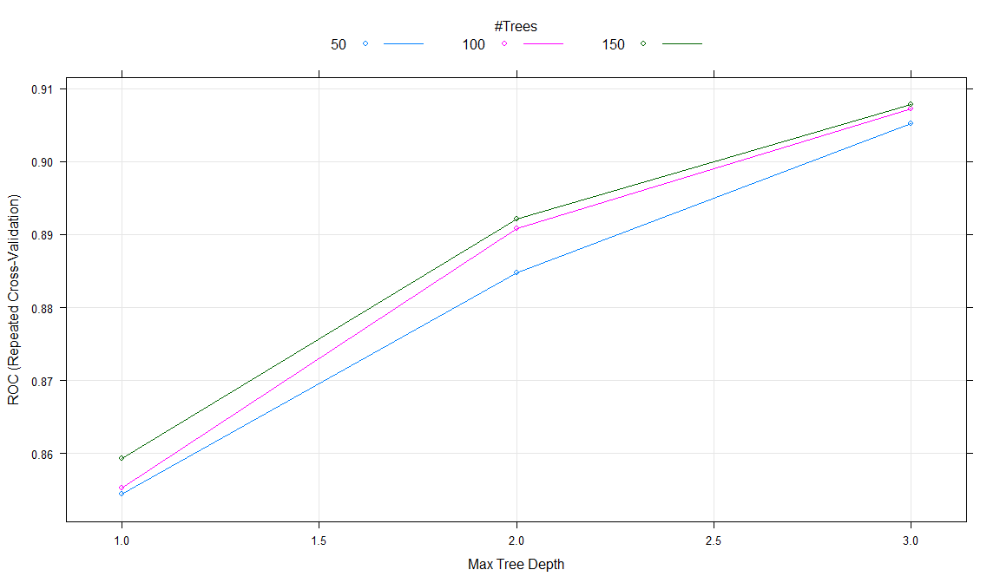
ada.predict = predict(ada.train, testset, "prob")
ada.predict.result = ifelse(ada.predict[1] > 0.5, "yes", "no")
table(testset$churn, ada.predict.result)## ada.predict.result
## no yes
## yes 40 101
## no 871 6churn.boostcv = boosting.cv(churn ~ ., v=10, data=trainset,
mfinal=5,control=rpart.control(cp=0.01))## i: 1 Fri Feb 23 20:02:06 2018
## i: 2 Fri Feb 23 20:02:08 2018
## i: 3 Fri Feb 23 20:02:09 2018
## i: 4 Fri Feb 23 20:02:10 2018
## i: 5 Fri Feb 23 20:02:11 2018
## i: 6 Fri Feb 23 20:02:12 2018
## i: 7 Fri Feb 23 20:02:13 2018
## i: 8 Fri Feb 23 20:02:15 2018
## i: 9 Fri Feb 23 20:02:16 2018
## i: 10 Fri Feb 23 20:02:17 2018churn.boostcv$confusion## Observed Class
## Predicted Class yes no
## no 114 1936
## yes 228 37churn.boostcv$error## [1] 0.06522678# install.packages("gbm")
library(gbm)## Warning: package 'gbm' was built under R version 3.4.3## Loading required package: survival##
## Attaching package: 'survival'## The following object is masked from 'package:caret':
##
## cluster## Loading required package: splines## Loaded gbm 2.1.3trainset$churn = ifelse(trainset$churn == "yes", 1, 0)
set.seed(2)
churn.gbm = gbm(formula = churn ~ .,distribution ="bernoulli",
data = trainset,n.trees = 1000,interaction.depth =7,
shrinkage = 0.01, cv.folds=3)
summary(churn.gbm)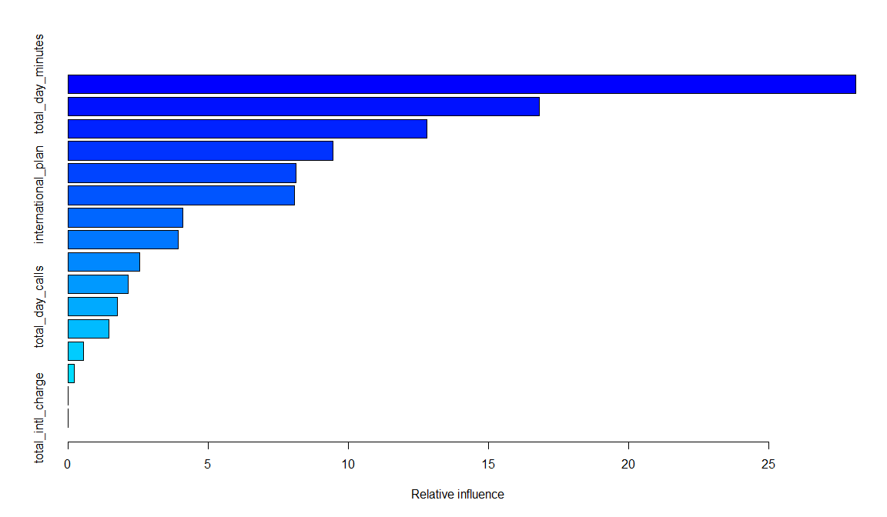
## var rel.inf
## total_day_minutes total_day_minutes 28.1217147
## total_eve_minutes total_eve_minutes 16.8097151
## number_customer_service_calls number_customer_service_calls 12.7894464
## total_intl_minutes total_intl_minutes 9.4515822
## total_intl_calls total_intl_calls 8.1379826
## international_plan international_plan 8.0703900
## total_night_minutes total_night_minutes 4.0805153
## number_vmail_messages number_vmail_messages 3.9173515
## voice_mail_plan voice_mail_plan 2.5501480
## total_night_calls total_night_calls 2.1357970
## total_day_calls total_day_calls 1.7367888
## total_eve_calls total_eve_calls 1.4398047
## total_eve_charge total_eve_charge 0.5457486
## total_night_charge total_night_charge 0.2130152
## total_day_charge total_day_charge 0.0000000
## total_intl_charge total_intl_charge 0.0000000churn.iter = gbm.perf(churn.gbm,method="cv")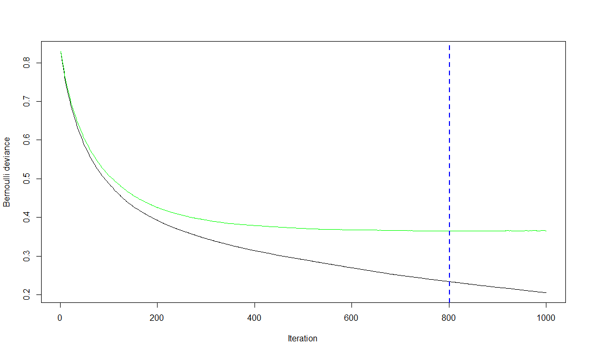
churn.predict = predict(churn.gbm, testset, n.trees = churn.iter)
str(churn.predict)## num [1:1018] -3.31 -2.91 -3.16 -3.47 -3.48 ...churn.roc = roc(testset$churn, churn.predict)
plot(churn.roc)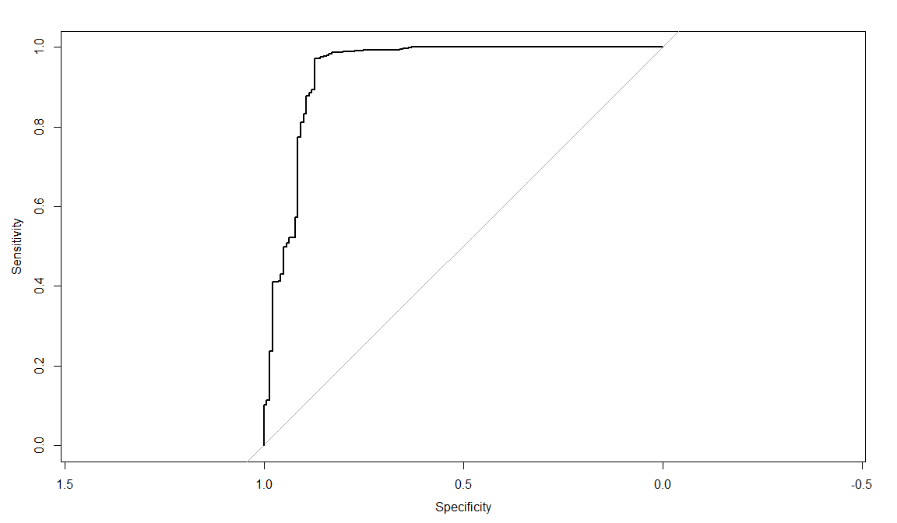
coords(churn.roc, "best")## threshold specificity sensitivity
## -0.9495258 0.8723404 0.9703535churn.predict.class = ifelse(churn.predict > coords(churn.roc,
"best")["threshold"], "yes", "no")
table( testset$churn,churn.predict.class)## churn.predict.class
## no yes
## yes 18 123
## no 851 26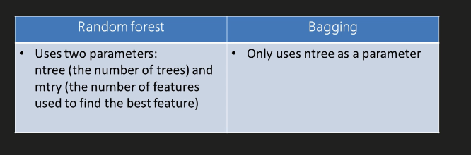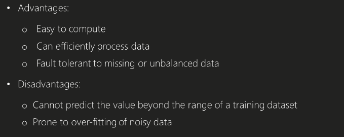
library(randomForest)## Warning: package 'randomForest' was built under R version 3.4.3## randomForest 4.6-12## Type rfNews() to see new features/changes/bug fixes.##
## Attaching package: 'randomForest'## The following object is masked from 'package:ggplot2':
##
## marginchurn.rf = randomForest(churn ~ ., data = trainset, importance =T)## Warning in randomForest.default(m, y, ...): The response has five or fewer unique values. Are you sure you want to do regression?churn.rf##
## Call:
## randomForest(formula = churn ~ ., data = trainset, importance = T)
## Type of random forest: regression
## Number of trees: 500
## No. of variables tried at each split: 5
##
## Mean of squared residuals: 0.04640701
## % Var explained: 63.14churn.prediction = predict(churn.rf, testset)
head(table(churn.prediction, testset$churn))##
## churn.prediction yes no
## -5.57887069874141e-16 0 1
## -4.94548846319276e-16 0 1
## -4.64184246595778e-16 0 1
## -4.47919479285019e-16 0 1
## -4.25326440733897e-16 0 1
## -4.22273327416178e-16 0 1plot(churn.rf)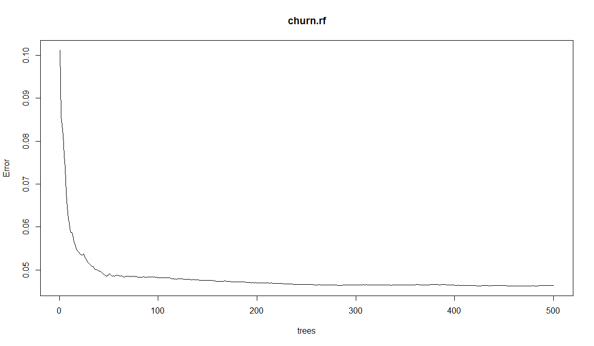
importance(churn.rf)## %IncMSE IncNodePurity
## international_plan 80.7149576 25.295787
## voice_mail_plan 23.3208545 6.544545
## number_vmail_messages 20.6152568 8.757943
## total_day_minutes 36.4861068 37.991652
## total_day_calls -0.5551472 8.545268
## total_day_charge 35.7751300 37.061961
## total_eve_minutes 23.8754395 20.937944
## total_eve_calls -0.9937240 7.076304
## total_eve_charge 23.4729642 21.865746
## total_night_minutes 15.8139138 9.810506
## total_night_calls 0.8897503 8.464765
## total_night_charge 15.6039881 9.488021
## total_intl_minutes 22.9955736 12.053245
## total_intl_calls 45.6644855 17.130940
## total_intl_charge 23.8023755 12.232521
## number_customer_service_calls 99.1497151 33.318553varImpPlot(churn.rf)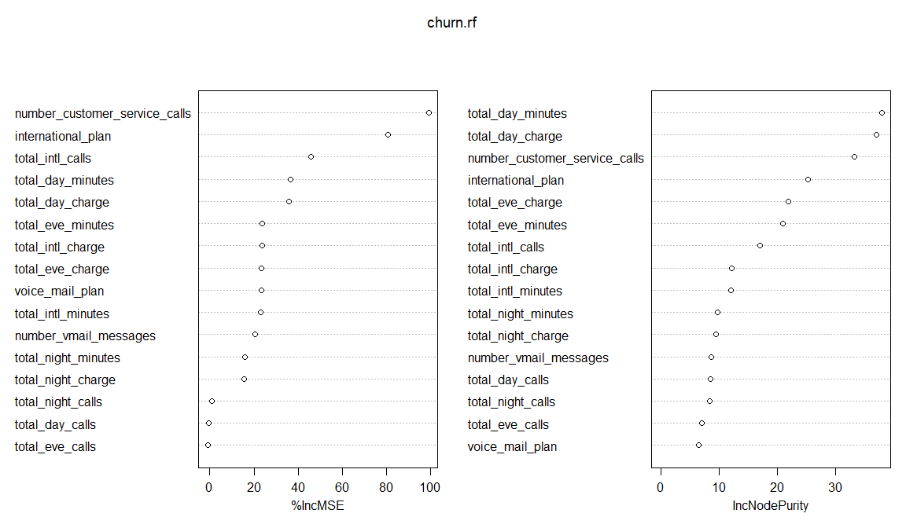
library(party)## Warning: package 'party' was built under R version 3.4.3## Loading required package: grid## Loading required package: mvtnorm## Warning: package 'mvtnorm' was built under R version 3.4.1## Loading required package: modeltools## Warning: package 'modeltools' was built under R version 3.4.1## Loading required package: stats4##
## Attaching package: 'modeltools'## The following object is masked from 'package:plyr':
##
## empty## The following object is masked from 'package:stabs':
##
## parameters## Loading required package: strucchange## Warning: package 'strucchange' was built under R version 3.4.3## Loading required package: zoo## Warning: package 'zoo' was built under R version 3.4.3##
## Attaching package: 'zoo'## The following objects are masked from 'package:base':
##
## as.Date, as.Date.numeric## Loading required package: sandwich## Warning: package 'sandwich' was built under R version 3.4.3##
## Attaching package: 'party'## The following object is masked from 'package:mboost':
##
## varimpchurn.cforest = cforest(churn ~ ., data = trainset,
controls=cforest_unbiased(ntree=1000, mtry=5))
churn.cforest##
## Random Forest using Conditional Inference Trees
##
## Number of trees: 1000
##
## Response: churn
## Inputs: international_plan, voice_mail_plan, number_vmail_messages, total_day_minutes, total_day_calls, total_day_charge, total_eve_minutes, total_eve_calls, total_eve_charge, total_night_minutes, total_night_calls, total_night_charge, total_intl_minutes, total_intl_calls, total_intl_charge, number_customer_service_calls
## Number of observations: 2315churn.cforest.prediction = predict(churn.cforest, testset,OOB=TRUE,
type = "response")
head(table(churn.cforest.prediction, testset$churn))##
## churn.cforest.prediction yes no
## 0.000323049588111775 0 1
## 0.00045047725089883 0 1
## 0.000506185889323944 0 1
## 0.000531340805313408 0 1
## 0.000616912207517516 0 1
## 0.000645902109946892 0 1